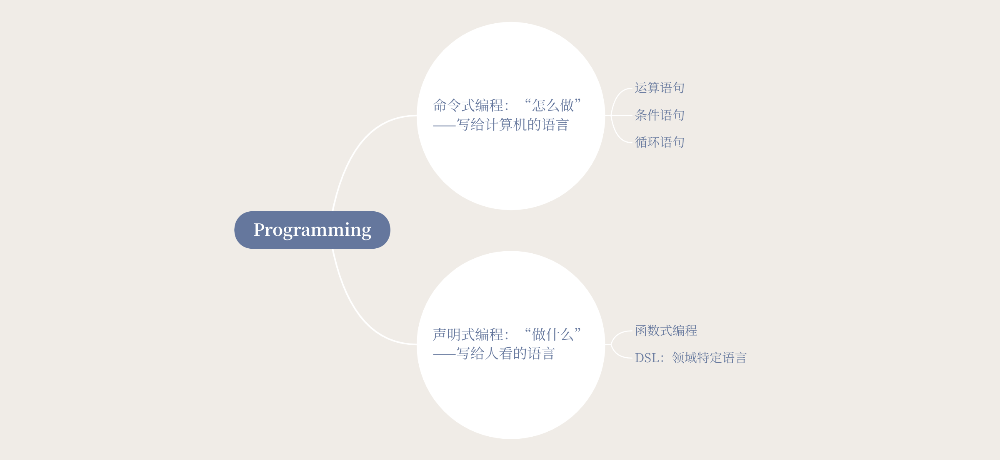

命令式编程 V.S. 声明式编程
Programming: Imperative & Declarative

Q：检查 students 里的学生的平均分，并输出平均分的第一名。
1
2
3
4
5
6
7
8
9
10
11
12
13
14
15
16
17
18
19
20
21
22
23
24
25
| struct Student {
let name: String
let scores: [Subject: Int]
}
enum Subject: String, CaseIterable {
case Chinese, Math, English
}
let s1 = Student(
name: "Foo",
scores: [.Chinese: 86, .Math: 92, .English: 73]
)
let s2 = Student(
name: "Bar",
scores: [.Chinese: 99, .Math: 52, .English: 97]
)
let s3 = Student(
name: "Joe",
scores: [.Chinese: 91, .Math: 92, .English: 100]
)
let students = [s1, s2, s3]
|
命令式编程
一步步告诉计算机怎么做。
1
2
3
4
5
6
7
8
9
10
11
12
13
14
15
16
17
18
19
20
21
22
|
var best: (Student, Double)?
for s in students {
var totalScore = 0
for key in Subject.allCases {
totalScore += s.scores[key] ?? 0
}
let averageScore = Double(totalScore) /
Double(Subject.allCases.count)
if let temp = best {
if averageScore > temp.1 {
best = (s, averageScore)
}
} else {
best = (s, averageScore)
}
}
print(best?.0.name ?? "no students")
|
声明式编程
告诉计算机要做什么，具体实现由计算机决定。
函数式
1
2
3
4
5
6
7
8
9
10
|
func average(_ scores: [Subject: Int]) -> Double {
return Double(scores.values.reduce(0, +)) / Double(Subject.allCases.count)
}
let bestStudent = students
.map { ($0, average($0.scores)) }
.sorted { $0.1 > $1.1 }
.first
|
（我是有点喜欢函数式啦，但 SICP 至今没看完。。）
DSL
例如 SQL：
1
2
| select name, avg(score) as avs_score
from scores group by name order by avg_score;
|
（不喜欢 SQL，我非常讨厌 group by 这种超过一个词的关键字，所以天天用 ORM。。）